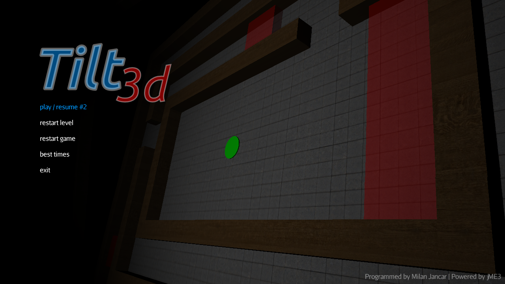
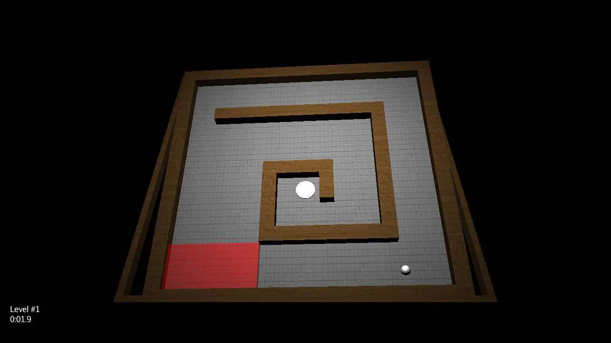
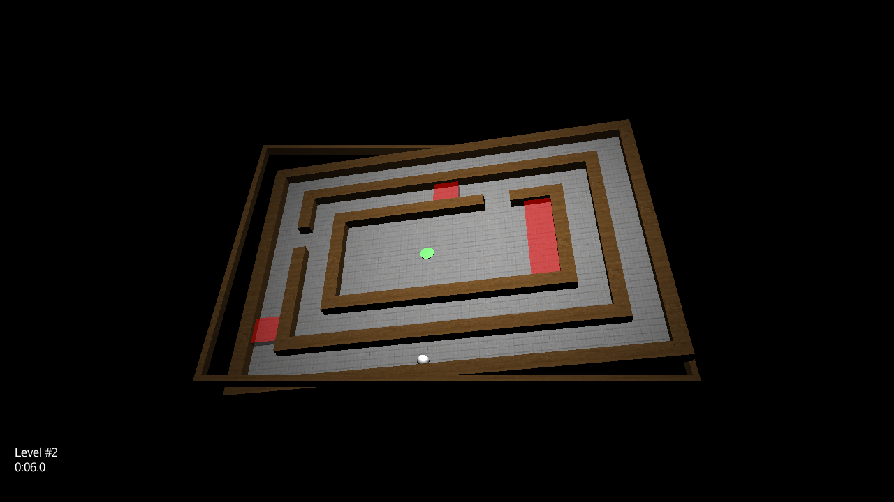
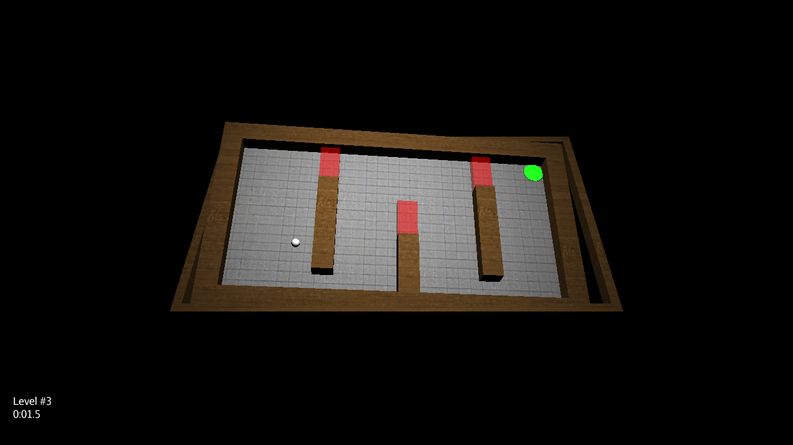
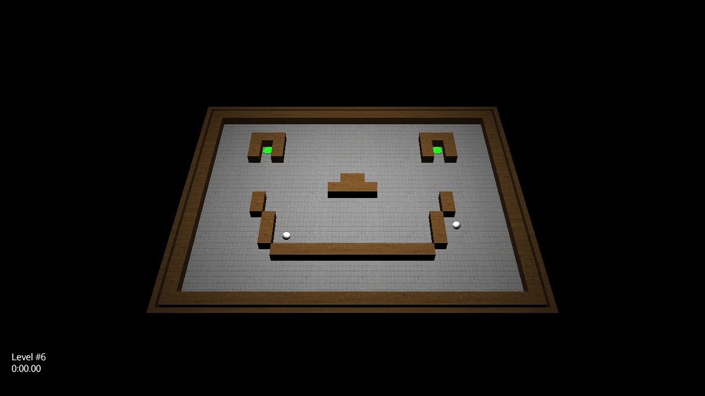
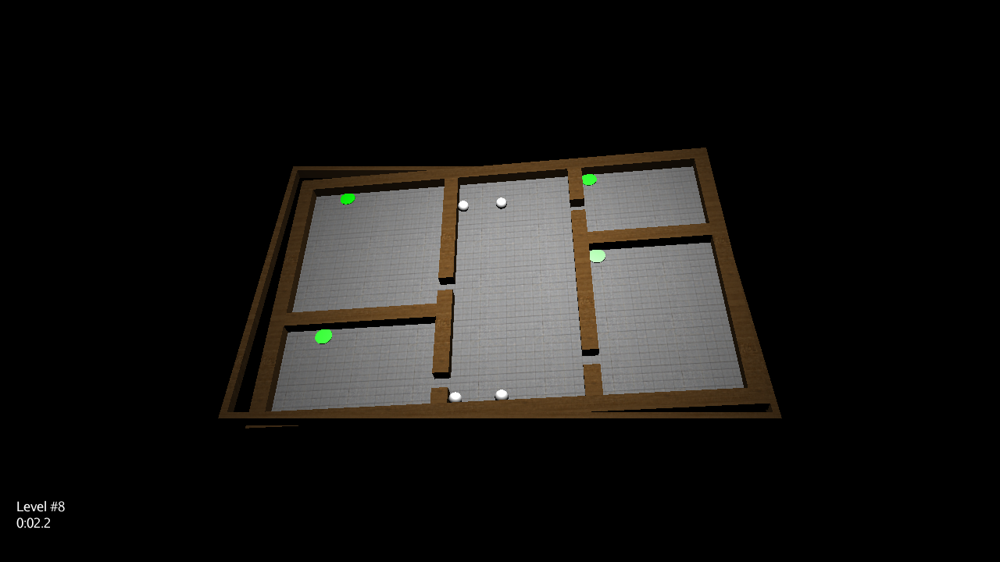
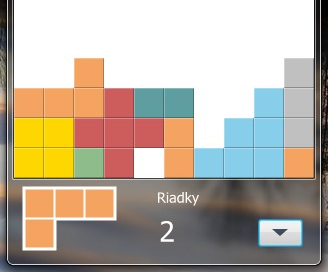
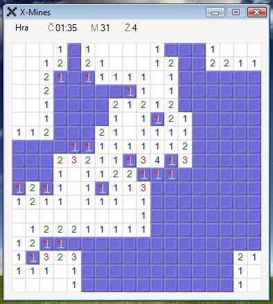

Ďalšie staré hry
Kedysi ma bavilo programovať rôzne hry. Tu je teda zopár vybraných, nič veľké, len tak pre zábavu...
Tilt3d
Jednoduchá logická 3D hra, naprogramovaná v Jave s použitím 3D enginu jMonkeyEngine. Cieľom je nakláňaním dosky dostať guľku do zeleného kruhu, treba sa však vyhnúť červeným miestam. V niektorých leveloch je guliek viac, čo hru skomplikuje.
|  |  | |
|  | ||
|  |  | |
|  | ||
{kind=link}
{kind=link}
{kind=link}
{kind=link}
{kind=link}
{kind=link}
Stiahnuť (vyžaduje (aspoň) Javu 6).
Tetrix
Klasický Tetris s efektom "Aero Glass" (svojho času, v dobe Windows Vista, to bol trend! :D), naprogramovaný vo Visual Basicu .NET.

Stiahnuť (vyžaduje .NET Framework 2.0)
X-Mines
Hra "Hľadanie mín" vylepšená tak, že po kliknutí na mínu sa hra nekončí, lebo hráč má viac životov - naprogramované na žiadosť kamoša, ktorý mal problém vyhrať klasické hľadanie mín :D Po grafickej stránke je hra "skinovateľná". Takisto naprogramované vo Visual Basicu .NET...

Stiahnuť (vyžaduje .NET Framework 2.0)